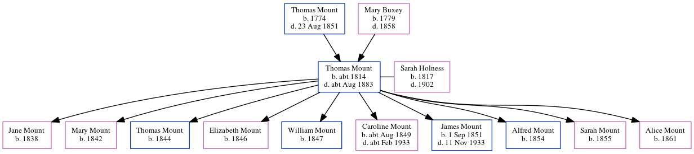

Thomas Mount c1814 - c1883
[ Home ] | [ Calendar ] | [ Surnames Index ] | [ Census Index ] | [ Family History ]A laborer and the child of Thomas Mount (an agricultural laborer) and Mary Buxey, Thomas Mount, the four times great-uncle of Nigel Horne, was born in Sturry, Kent, England c. 18141, was baptized there at St Nicholas' Church on Mar 13, 1814 and married Sarah Holness (a charwoman with whom he had 10 children: Jane, Mary, Thomas, Elizabeth, William, Caroline, James, Alfred, Sarah Ann and Alice) at St Martin's Church, Herne, Kent, England on Jul 14, 18383.
During his life, he was living at Mortimer Street, Herne Bay, Kent on Mar 30, 18516; at King Street, Herne Bay, Kent on Apr 7, 18611 and on Apr 2, 18714; and on Salts Lane, Herne Bay, Kent on Apr 3, 18815.
He died c. Aug 1883 in Blean, Kent, England2.
Parents
- Thomas was born in 1774
- Mary Elizabeth was born in 1779
Children
- Jane was born in 1838
- Mary was born in 1842
- Thomas was born in 1844
- Elizabeth was born in 1846
- William was born in 1847
- Caroline was born c. Aug 1849
- James was born on Sep 1, 1851
- Alfred was born in 1854
- Sarah Ann was born in 1855
- Alice was born in 1861
Citations
- 1861 England, Wales & Scotland Census - Findmypast (was age 42 and the head of the household)
- England & Wales deaths 1837-2007 - Findmypast
- England Marriages 1538-1973 - Findmypast
- 1871 England, Wales & Scotland Census - Findmypast (was age 57 and the head of the household)
- 1881 England, Wales & Scotland Census - Findmypast (was age 67 and the head of the household)
- 1851 England, Wales & Scotland Census - Findmypast (was age 38 and the head of the household)
Media
England & Wales deaths 1837-2007 - BMD/D/1883/3/AZ/000217/009
England Marriages 1538-1973 - R_848287663
England Marriages 1538-1973 - R_848288385
Kent, Canterbury Archdeaconry marriages - GBPRS/CANT/M/97017252/1
England & Wales marriages 1837-2005 - BMD/M/1838/3/AZ/000378/049
1881 England, Wales & Scotland Census - GBC/1881/0004747350
1861 England, Wales & Scotland Census - GBC/1861/0003457025
Kent Baptisms - GBPRS/CANT/B/96305401
England Births & Baptisms 1538-1975 - R_884706154
Kent marriages and banns - GBPRS/CANT/M/94018227/1
1851 England, Wales & Scotland Census - GBC/1851/0005822507
Family Tree
Generated by ged2site. Last updated on Jun 11, 2024